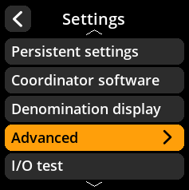
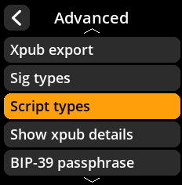
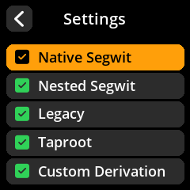

Script Types Configuration
Define which Bitcoin script types are supported on the device.
Step-by-Step Process
Navigate: Settings → Advanced → Script Types
Select Supported Scripts:
Native Segwit - P2WPKH addresses (default enabled)
Nested Segwit - P2SH-wrapped Segwit (default enabled)
Legacy - P2PKH addresses
Taproot - P2TR addresses (default enabled)
Custom Derivation - Custom derivation paths



